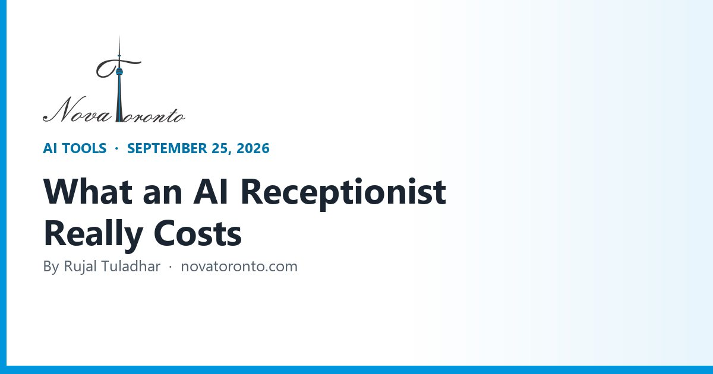

AI Receptionists in 2026: What They Cost and What Ontario Law Asks
Published September 25, 2026 • By Rujal Tuladhar

Every missed call is a customer who dials the next business on the list. If you run a clinic, a trades company or a small office in the GTA, you already know the choice: pay someone to sit by the phone, send callers to voicemail, or answer while you are supposed to be doing the actual work.
AI receptionists promise a fourth option, and the prices now look almost too low: $29, $49, $79 a month. The catch is that every vendor meters something different — minutes, calls, or unique callers — so the headline number tells you very little. Below are the list prices I pulled from each vendor's own pricing page today, a worked example for a business taking 200 calls a month, and the Canadian privacy rules that apply the moment a robot starts recording your callers.
$29 to $299 a month
Self-serve AI plans from Dialzara, Rosie, Goodcall and My AI Front Desk
Three different meters
Minutes, calls or unique callers — the unit moves your bill more than the price
Humans still cost 10x
Ruby's live receptionists start at $250 for 50 minutes a month
19.9% of micro-businesses use AI
Statistics Canada, Q2 2026, firms with one to four employees
Tell callers first
Canada's privacy regulator expects notice, purpose and an alternative before recording
AI Receptionists in 2026: What They Cost and What Ontario Law Asks at a glance — the short version.
Three ways vendors bill you
Before comparing prices, figure out which meter each vendor uses, because the same month of calls produces very different bills.
- Per minute. Dialzara, Rosie and My AI Front Desk give you a bucket of minutes. Long calls — a patient explaining symptoms, a homeowner describing a leak — eat the bucket fast.
- Per call. Smith.ai counts calls, not minutes, so a ten-minute call costs the same as a thirty-second one.
- Per unique caller. Goodcall bills by unique customers a month and states plainly: "We DO NOT charge any fees for number of calls call minutes, or tokens consumed by your AI." A regular who calls five times counts once.
Two more details matter. Smith.ai says calls from its list of 20 million+ known spammers are filtered out before the AI answers and "do not count toward your quota" — a real saving if your number is on robocall lists. And Rosie's own pages do not state an overage rate, while third-party reviews disagree on whether it charges per extra minute or upgrades your plan. Ask before you sign.
The self-serve tier: $29 to $299 a month
These are the plans you can sign up for tonight without a sales call.
- Dialzara has the lowest entry point: Business Lite is $29 a month for 60 minutes with overage at $0.48 a minute; Business Pro is $99 for 220 minutes; Business Plus is $199 for 500 minutes at $0.40 overage; Business Elite is $349 for 1,000 minutes. Every tier has a 7-day free trial.
- Rosie is $49 a month for 250 minutes, $149 for 1,000 minutes and $299 for 2,000, with a 7-day free trial. Its homepage says it answers questions, books appointments, sends scheduling links by text, filters spam and sales calls, and sends you summaries, transcripts and recordings. It also says it learns your business from your website and Google Business Profile.
- My AI Front Desk is $99 a month ($79 billed annually) for 200 voice minutes, plus chatbot, SMS and email allowances. Extra voice minutes cost 25 credits each, and the page says one credit is $0.01 — so $0.25 a minute.
- Goodcall is $79 a month per agent for 100 unique customers, $129 for 250 and $249 for 500, with $0.50 per extra customer and a 15% discount on annual billing.
One gap to flag for Canadian buyers: none of these five pricing pages mentions Canada or Canadian phone numbers. Before paying, confirm you can keep your existing 416, 647 or 905 number and simply forward to the AI, and check what currency you will be invoiced in.
200 calls a month, five different bills
Take a realistic case: a dental office or HVAC company getting 200 calls a month, averaging two and a half minutes each (500 minutes), from about 170 different callers. Using the list prices above:
- Goodcall Starter: $79 plus 70 extra customers at $0.50. About $114.
- Rosie Scale: 500 minutes fits inside 1,000. $149.
- My AI Front Desk: $99 plus 300 extra minutes at $0.25. About $174.
- Dialzara Business Plus: 500 minutes included. $199. (Business Pro would cost $99 plus 280 minutes at $0.45 — about $225, so the bigger plan wins.)
- Smith.ai Pro: $150 covers 75 calls at its listed $2.00 per call; 200 calls at that rate is roughly $400, before any live-agent add-ons.
Smith.ai is not simply the expensive option. It is the only one here with a human safety net: it says its "500+ North America-based receptionists" are available as a per-call add-on, and it integrates natively with Salesforce, HubSpot and Clio. For a law office where a botched intake call costs a client, that backup is worth paying for.
The minutes and caller counts in this example are my assumptions, not vendor figures. Run the same math with your own log before choosing.
What a human receptionist service costs for comparison
The reason AI receptionists are selling is visible on Ruby's pricing page. Its live virtual receptionist plans are $250 a month for 50 minutes, $395 for 100, $720 for 200 and $1,725 for 500 minutes. Our 500-minute example office would pay $1,725 for people versus $114 to $199 for software.
That gap does not mean the software does the same job. Bluehost's September 8, 2026 roundup of AI receptionist tools puts it bluntly: "Complex, sensitive or emotionally nuanced conversations still require a person," and accuracy "depends on setup quality and whether your knowledge base stays current." Its advice is the same as mine — run a trial and test the caller experience before switching everything over, and verify compliance claims with the vendor directly.
Who should not bother: if most of your calls are upset customers, complicated quotes or anything clinical, an AI receptionist will mostly take messages and create callbacks. You will pay for a voicemail with a nicer voice.
The Ontario rules: tell callers before you record
Most AI receptionists record and transcribe every call — Rosie lists recordings and transcripts as a feature. In Ontario, that brings in federal privacy law. The Office of the Privacy Commissioner's PIPEDA overview notes that only Alberta, British Columbia and Quebec have their own private-sector privacy laws deemed substantially similar; Ontario's similar law covers personal health information only, which is worth knowing if you run a clinic.
The regulator's guidance on recording customer telephone calls is short: "The organization must inform the customer that they are recording a call, clearly state the purpose of the recording and ask for their consent." If a caller objects, they should have another way to do business with you — the page gives examples like visiting in person, writing, or completing the transaction online. That guidance dates from 2018, but it is still the page the regulator publishes today.
In practice, that is one sentence at the top of the greeting: this call is answered by an AI assistant and recorded so we can send you a summary and book your appointment — say "staff" any time to reach a person. Then make sure that escape route actually works.
Where this fits in 2026
You would not be early. Statistics Canada's second-quarter 2026 analysis, released June 11, found 19.2% of Canadian businesses used AI to produce goods or deliver services in the previous 12 months, and 19.9% of businesses with one to four employees did — the smallest firms are now slightly ahead of the average.
The phone is one of the easiest places to start because the success test is simple: did the call get answered, and did it turn into a booking? You can measure that in two weeks. What usually decides whether it pays off is not the voice but the plumbing afterwards — whether the booking lands in your calendar, the lead lands in your CRM, and the caller gets a confirmation text without anyone retyping it.
The bottom line
The short version: if you miss calls because you are busy, a $49 to $149 AI plan will pay for itself with one or two saved bookings a month. Goodcall is the best value if you get many repeat callers, Rosie is the simplest start for a solo operator, and Smith.ai is the one to pay for when a badly handled call is expensive. Whatever you pick, add the recording disclosure and a real route to a person on day one. If you want the calls to flow straight into your calendar, CRM and follow-up texts without a patchwork of apps, that is the kind of setup we build for GTA businesses at Nova Toronto — and it is usually a quick conversation to tell whether it is worth automating yet.
Want this working in your business?
Book a free 30-minute call and we'll map out which of these would actually save you time and win you customers.
Book a Free ConsultationSources: Dialzara — Pricing, minutes and overage rates • Rosie — Pricing and included minutes • Rosie — Features, free trial and setup • My AI Front Desk — Pricing and credit rates • Goodcall — Pricing per unique customer • Smith.ai — AI Receptionist pricing and spam filtering • Smith.ai — AI Receptionist, live agent network and integrations • Ruby — Virtual receptionist pricing • Bluehost — Best AI receptionist tools (September 2026) • Office of the Privacy Commissioner of Canada — Recording of customer telephone calls • Office of the Privacy Commissioner of Canada — PIPEDA in brief • Statistics Canada — Analysis on AI use by businesses in Canada, Q2 2026